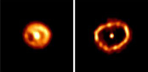

A cataclysmic variable which has only been seen to erupt once is known as a classical nova. During outburst, the brightness of these novae can increase by 6 to 19 magnitudes before fading back to the original level. The outbursts themselves can last anywhere from several days to years, but in general, the brighter the nova, the shorter its duration.
Classical novae arise in a close binary systtem where a white dwarf and a main sequence star orbit each other with a period of generally less than 12 hours. Due to their close proximity and the extreme gravity of the white dwarf, hydrogen from the companion star is drawn into an accretion disk and eventually deposited as a hydrogen layer on the surface of the white dwarf.

Credit: F. Paresce, R. Jedrzejewski, NASA/STScI/ESA
As more hydrogen (and helium) is accreted, the pressure and temperature at the bottom of this surface layer increase until sufficient to trigger nuclear fusion reactions (about 10 million Kelvin). These reactions rapidly convert the hydrogen into heavier elements creating a runaway thermonuclear reaction where the energy released by the hydrogen burning increases the temperature, which in turn drives up the rate of hydrogen burning.
The energy released through this process ejects the majority of the unburnt hydrogen from the surface of the star in a shell of material moving at speeds of up to 1,500 km/s. This produces a bright but short-lived burst of light – the nova.
Although Type Ia supernova appear to have similar origina to classical novae, there are key differences. The most important is that in a classical nova, the thermonuclear runaway occurs only on the surface of the star, allowing the white dwarf and the binary system to remain intact. In a Type Ia supernova, the thermonuclear runaway occurs within white dwarf itself, completely disrupting the progenitor. This is reflected in the amount of energy released in the explosions, with classical novae releasing around 1037 Joules, and Type Ia supernovae ~1044Joules.
Since the white dwarf and the binary system remain intact after an outburst, it is possible that classical novae may actually be the same as recurrent novae if observed over a long enough time period. While the interval between outbursts of recurrent novae range from 10 to 100 years, it has been estimated that the time interval for classical novae would range from about 30,000 years for a 1.3 solar mass white dwarf to 100,000 years for a 0.6 solar mass white dwarf. Given long enough – it is expected that all classical novae will be observed as recurrent novae.